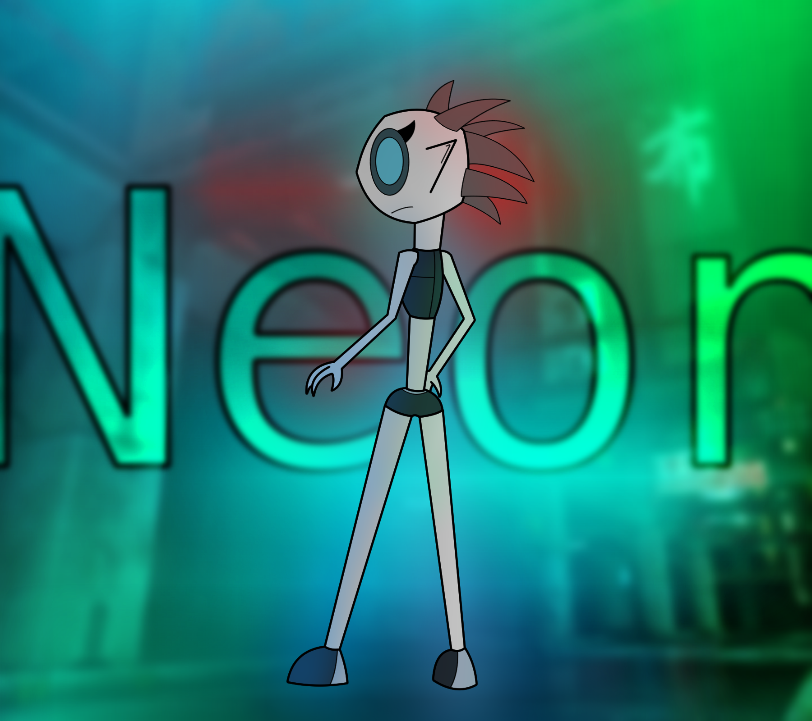
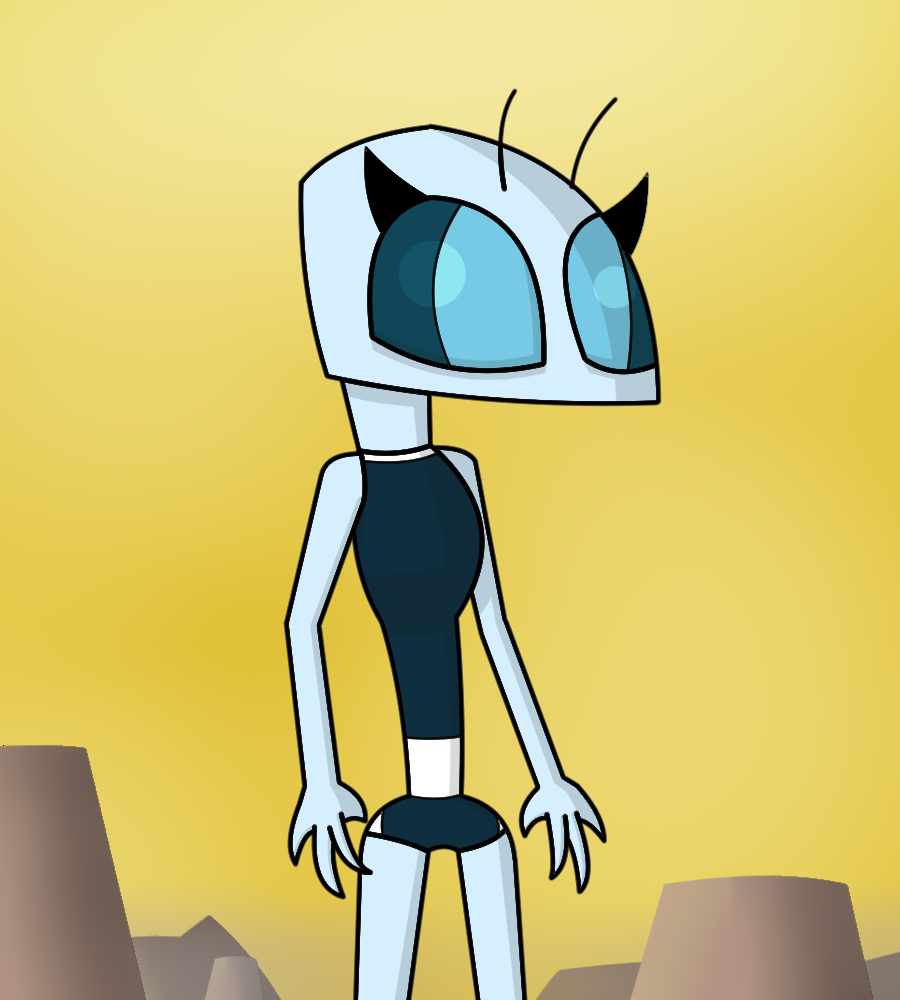
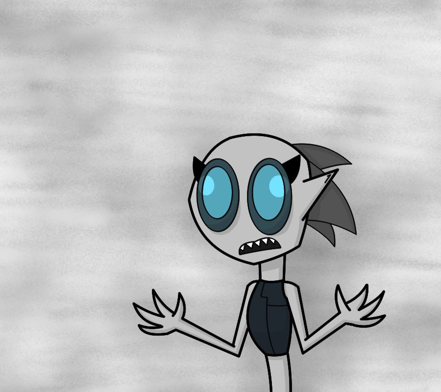
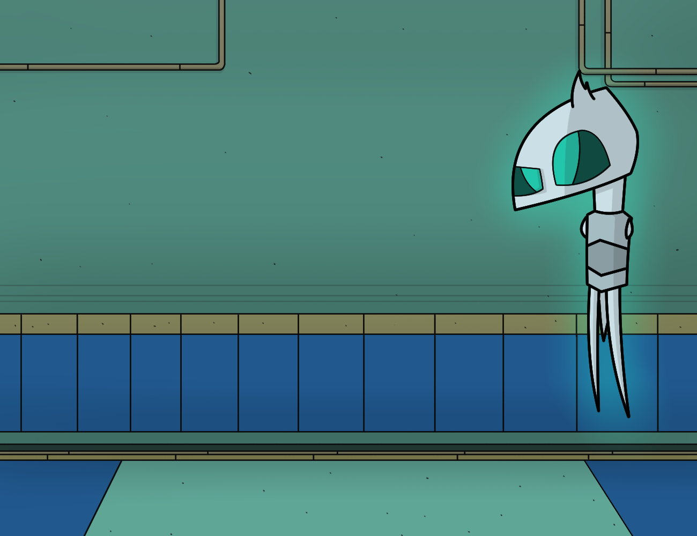

The art-style I use is simple and quite easy to learn. If you want to see better then this place isn't for you. The images are free to download but if you're gonna use them for reviews or other purposes then give credit. Stealing and/or recolor my work will only get you into trouble.
This is Jewel. She's a character I made from my school years and was gonna be featured in a game. Now I don't know what to do with her.
{kind=link}
 Get ready for something! I don't know what!
Get ready for something! I don't know what! It's really not funny! Thought that the previous pupils wouldn't work with the new eye form so I changed it.
It's really not funny! Thought that the previous pupils wouldn't work with the new eye form so I changed it. The terrible Itch! I might not remember what Jewel was supposed to be.
The terrible Itch! I might not remember what Jewel was supposed to be. The head form speaks 'Nja' again.
The head form speaks 'Nja' again.Different head shape for Jewel! It was just an experiment so it's not a replacement for her. She's also still mouthless.
{kind=link}
 Be no good when die. That's the answer to all.
Be no good when die. That's the answer to all.Old Rezzy pic from Twitter! Has a game ref here as well.
{kind=link}
 Practiced a bit on redrawing a music album cover. "Last Word" By "Light Blending In" The guy here is just a scientist I came up with for a 2D game.
Practiced a bit on redrawing a music album cover. "Last Word" By "Light Blending In" The guy here is just a scientist I came up with for a 2D game. Don't believe her?
Don't believe her?Zeem Zaam Zuum.
{kind=link}
Rezzy Questioning reality.
{kind=link}
 No. Elephants grows from trees.
No. Elephants grows from trees.This is Rikgle. No need to answer anything yet.
{kind=link}
 This is Brighter Jewel. She bright in color, not in the head.
This is Brighter Jewel. She bright in color, not in the head. Mizaloizy being sad again. Just like me.
Mizaloizy being sad again. Just like me.Page 1
Page 2
Page 3
Go back to start